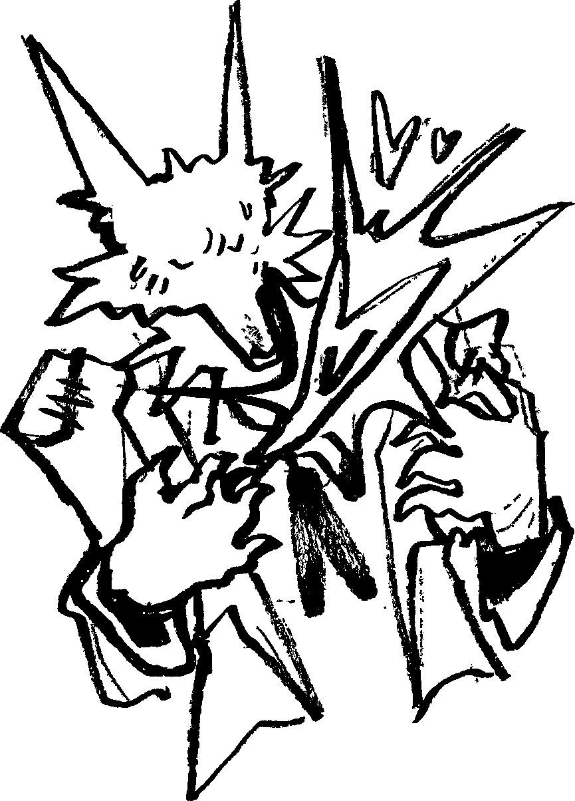
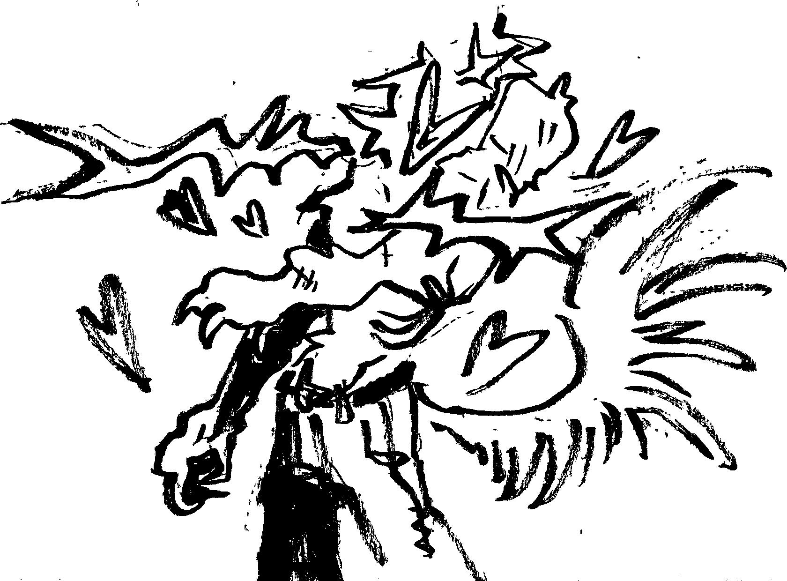
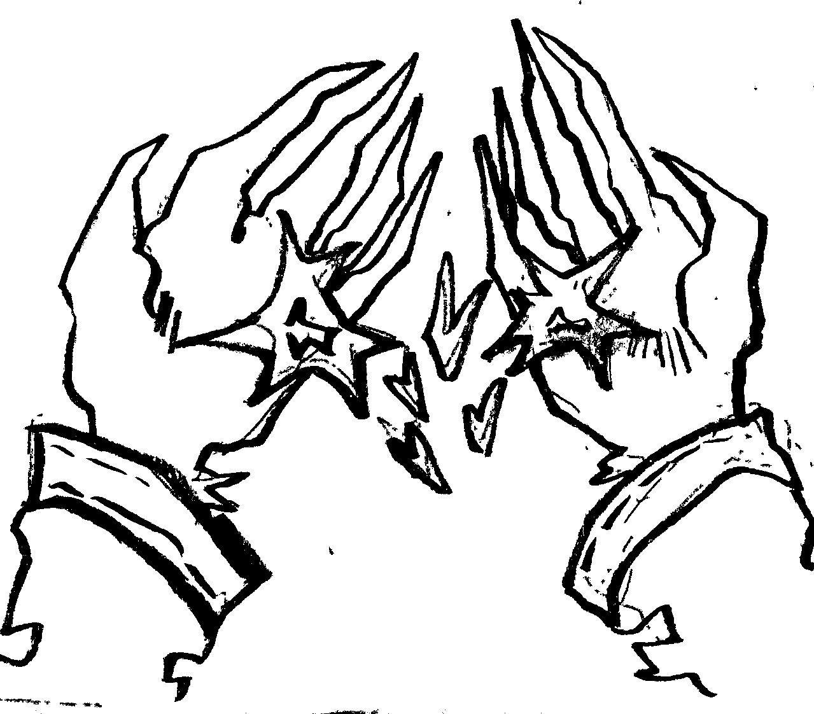

If part of me is gone, then who am I? What am I doing? I have been trying so hard yet will I become unrecognizable for her? It’s true my fur has gotten long and matted. My ribs show at times. I have new wounds from my journey that I haven’t been considerate to. I’ve been damaging myself, yet I failed to see what was so wrong with it. Not until the tender touch of another that I had desperately needed, helped guide me.
  